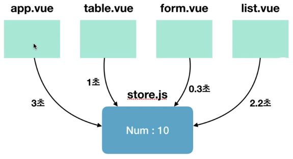

Vuex개요Flux 패턴 소개MVC패턴의 복잡한 데이터 흐름 문제를 해결하는 개발 패턴이다.
단방향 데이터 흐름(Unidirectional data flow)을 가지고 있다.
controller -> model <-> view
MVC패턴의 문제점
데이터의 흐름이 여러갈래로 나뉘지 않고 단방향으로만 처리되는 패턴
Action -> Dispatcher -> Model(Store) -> View -> Action ...
복잡한 애플리케이션에서 컴포넌트의 개수가 많아지면 컴포넌트 간에 데이터 전달이 어려워진다.
즉 props나 이벤트로 계속 전달을 해주어야 한다.
ex)로그인 처리
a 로그인 폼 -> b 로그인 -> c 기타처리 -> d 기타처리 -> e 루트 -> f 메인
a컴포넌트에서 f컴포넌트로 가기위해 여러번 걸쳐야하는 번거로움이 발생
이벤트버스를 사용하면?
//Login.vue
eventBus.$emit('fatch',loginInfo)
//List.vue
eventBus.$on('display',data => this.displayOnScreen(data))
//Chart.vue
eventBus.$emit('refreshData',chartData)
Vuex로 해결할 수 있는 것
Vuex 컨셉과 구조datatemplatemethodsVuex의 단방향 데이터 흐름 처리

Vuex 구조

Vuex 설치 및 시작npm install vuex --save
src폴더에 store/store.js 생성
import Vue from 'vue'
import Vuex from 'vuex'
Vue.use(Vuex);
export const store = new Vuex.Store({
state:{},
getters:{},
mutations:{},
actions:{}
})
Vuex 기술요소| 요소 | 설명 | 방식 |
|---|---|---|
state |
여러 컴포넌트에 공유되는 데이터 | data |
getters |
연산된 state값을 접근하는 속성 | computed |
mutations |
state값을 변경하는 로직을 선언 | method |
actions |
비동기 처리 로직을 선언 | aysnc method |
commit |
변이(mutations) 호출 | method |
dispatch |
액션(actions) 호출 (한 액션에서 다른 액션을 호출할 수 있다) | method |
// Vue
data:{
message:'hi'
}
// Vuex
state:{
message:'hi'
}
<!-- Vue -->
<p>{{message}}</p>
<!-- Vuex -->
<p>{{this.$store.state.message}}</p>
store.js
state:{
num:10
},
getters:{
getNumber(state){
return state.num;
},
doubleNumber(){
return state.num*2;
}
}
<p>{{this.$store.getters.getNumber}}</p>
<p>{{this.$store.getters.doubleNumber}}</p>
store.js
state:{num:10},
mutations:{
printNumbers(state){
return state.num
},
sumNumbers(state, anotherNum){
return state.num+anotherNum
},
modifyNumbers(state, payload){
console.log(payload.str);
return state.num+=payload.num;
}
}
App.vue
this.$store.commit('printNumbers');
this.$store.commit('sumNumbers', 20);
this.$store.commit('modifyNumbers', {
str:'메세지',
num:20
});
state는 왜 직접 변경하지 않고 mutations로 변경할까?

왜 비동기 처리 로직은 actions에 선언해야 할까?
비동기 데이터 실행 후 state 변경하는 순서
//store.js
state:{num:10},
mutations:{
doubleNumber(state){
state.num*2;
}
},
actions:{
//context로 store의 메서드(mutations)와 속성 접근
delayDoubleNumber(context){
//commit() : mutations발생
context.commit('doubleNumber')
}
}
//App.vue
//dispatch() : actions발생
this.$store.dispatch('delayDoubleNumber');
api 적용 예제
//store.js
state:{product:{}},
mutations:{
setData(state, fetchedData){
state.product=fetchedData;
}
},
actions:{
fetchProductData(context){
return axios.get('https://domain.com/products/1')
.then(response => context.commit('setData', response))
}
}
//App.vue
methods:{
getProduct(){
this.$store.dispatch('fetchProductData');
}
}
Vuex HelpersStore에 있는 4가지 속성들을 간편하게 코딩하는 방법
속성 |
Helper함수 |
|---|---|
| state | mapState |
| getters | mapGetters |
| mutations | mapMutations |
| actions | mapActions |
//store.js
state:{
num:10
}
//App.vue
import { mapState } from "vuex";
computed:{
...mapState(['num'])
// num(){
// return this.$store.state.num;
// }
}
<!-- <p>{{this.$store.state.num}}</p> -->
<p>{{num}}</p>
//store.js
state:{
msg:'hello'
},
getters:{
reverseMessage(state){
return state.msg.split('').reverse().join('');
}
}
//App.vue
import { mapGetters } from "vuex";
computed(){
...mapGetters(['reverseMessage'])
// 사용할 이름을 지정하고 싶을 때
// ...mapGetters({
// reverseMsg:'reverseMessage'}
// )
// 기존방식
// reverseMsg(){
// return this.$store.getters.reverseMessage;
// }
}
<!-- <p>{{this.$store.getters.reverseMsg}}</p> -->
<!-- <p>{{reverseMsg}}</p> -->
<p>{{reverseMessage}}</p>
//store.js
state:{
msg:'hello'
},
mutations:{
clickBtn(state){
alert(state.msg)
}
}
//App.vue
import { mapMutations } from "vuex";
method:{
...mapMutations(['clickBtn']),
otherMethod(){}
}
<button @click="clickBtn">msg</button>
//store.js
state:{
msg:'hello'
},
mutations:{
clickBtn(state){
alert(state.msg)
}
},
actions:{
delayClickBtn(context){
setTimeout(() => context.commit('clickBtn'), 2000)
}
}
//App.vue
import { mapActions } from "vuex";
method:{
...mapActions(['delayClickBtn']),
}
<button @click="delayClickBtn">msg</button>
...mapMutations([
'clickBtn', //'clickBtn':clickBtn
'addNumber' //addNumber(인자)
])
...mapMutations({
popupMsg:'clickBtn' // 컴포넌트 메서드명 : Store 뮤테이션명
})
Vuex로 구조화 및 모듈화하는 방법//store.js
import Vue from 'vue'
import Vuex from 'vuex'
import * as getters from 'store/getters.js'
import * as mutations from 'store/mutations.js'
import * as actions from 'store/actions.js'
export const store = new Vuex.Store({
state:{},//내부에 작성
getters:getters,
mutations,//이름이 같을 경우 한번만 작성
actions
})
//store.js
import Vue from 'vue'
import Vuex from 'vuex'
import todo from 'modules/todo.js'
import notice from 'modules/notice.js'
export const store = new Vuex.Store({
modules:{
modulesA:todo, //모듈명칭 : 모듈파일명
todo, // todo:todo => 이름이 같을 경우 한번만 작성
notice
}
})
//todo.js
const state={}
const getters={}
const mutations={}
const actions={}
export default{state, getters, mutaions, actions}